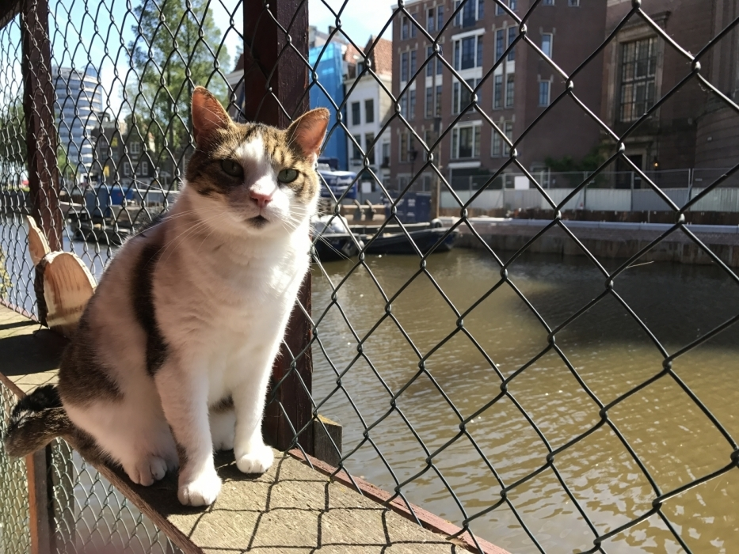

Er zijn een paar manieren hoe je de kattenboot kan helpen. Hier onder beschrijven we een paar.
Help
Vrijwilligerswerk
Hier gaat het voornamelijk om het helpen bij de katten verzorgen en/of het helpen met het onderhouden van de poezenboot.
Doneren
De poezenboot draait op het start kaptiaal en daarna op donaties van mensen en het geld voor het adopteren. Hierdoor zijn donaties altijd welkom al het verdiende geld gaat weer terug de poezenboot in.
Adopteren
Doormiddel van adopteren heeft de kat weer een veilig thuis en onstaat er weer ruimte voor andere katten die hulp nodig hebben.